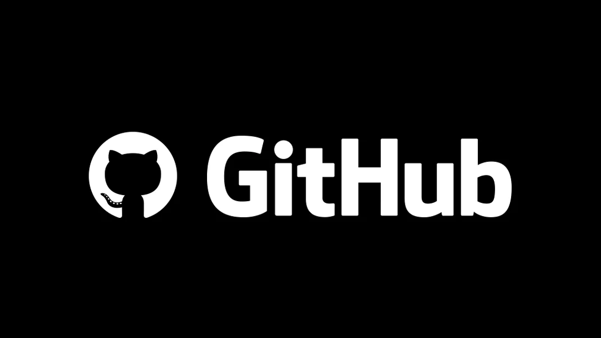

Documentation

View this work on GitHub
GitHub
The documentation detailing the project's logic and JavaScript scripts, along with the source files, is available on the project's GitHub page. It provides comprehensive insights into the structure and functionality, making it a valuable resource for developers and contributors.